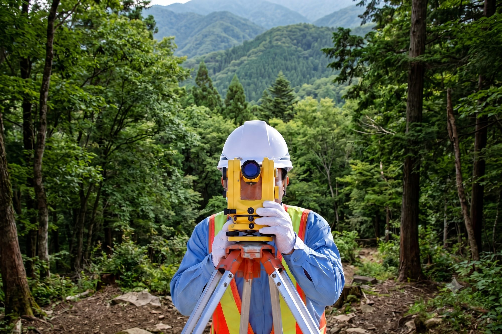

私たちの仕事は、まちのインフラをつくる工程の“最初の一歩”に立つことです。道路・橋梁・河川・造成——そのすべては、地面を正確に「はかる」ことから始まります。

SURVEYING → DESIGN → MANAGEMENT1981年（昭和56年）の創業以来、私たちは公共測量・工事測量で培った「はかる技術」を軸に、調査・設計、そして施工管理へと領域を広げてきました。
3つの事業はそれぞれ異なる専門性を持ちますが、地続きの現場で互いに補完し合います。同じ会社の中で連携できるから、精度と工程の両面でお客様の負担を減らすことができる——これが、私たちが3事業を一社で持ち続ける理由です。
近年はドローン空撮・3Dレーザースキャナー・GNSSといった先端技術を積極的に取り入れ、i-Construction時代の現場に応えています。それでも変わらないのは、「早く・安く・良く」——技術屋の良心を軸に、現場で汗をかく姿勢です。
それぞれの専門分野が異なるため、独立して深掘りできる構成にしています。3つの領域は互いに補完し合い、現場の“はじまりから終わりまで”を支えます。
公共測量・工事測量から3次元計測まで、“はかる”のあらゆる場面で。土木設計・地質調査・環境調査で、次の一歩の計画を描く。そして、労働者派遣許可のもと施工管理技術者を現場へ——お客様の現場を、はじまりから終わりまで支えます。